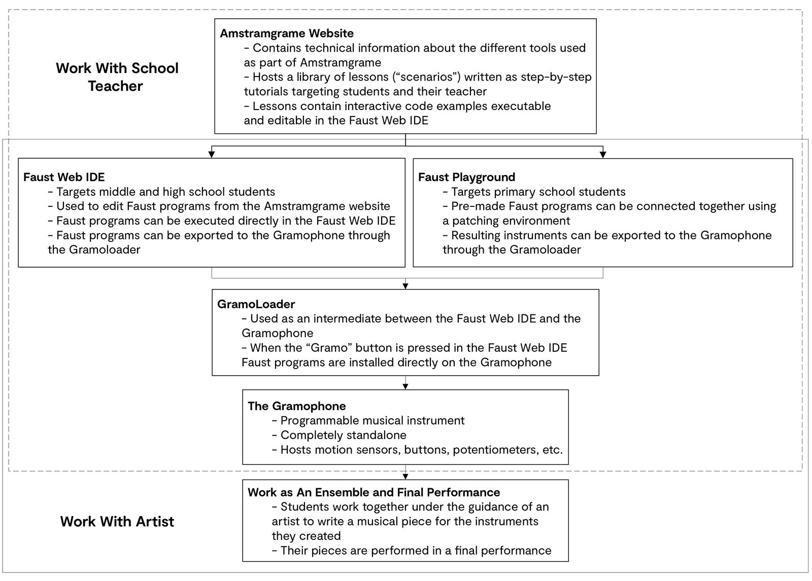
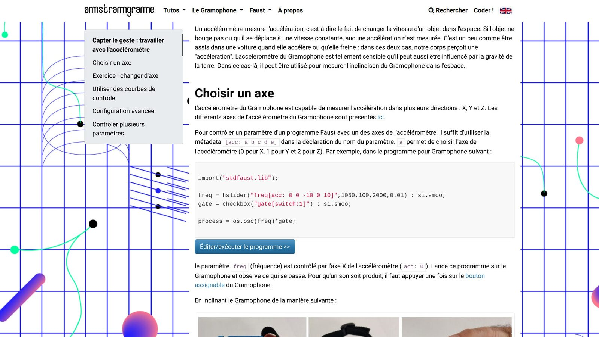
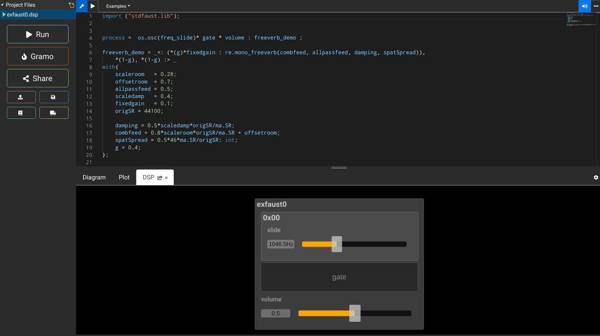
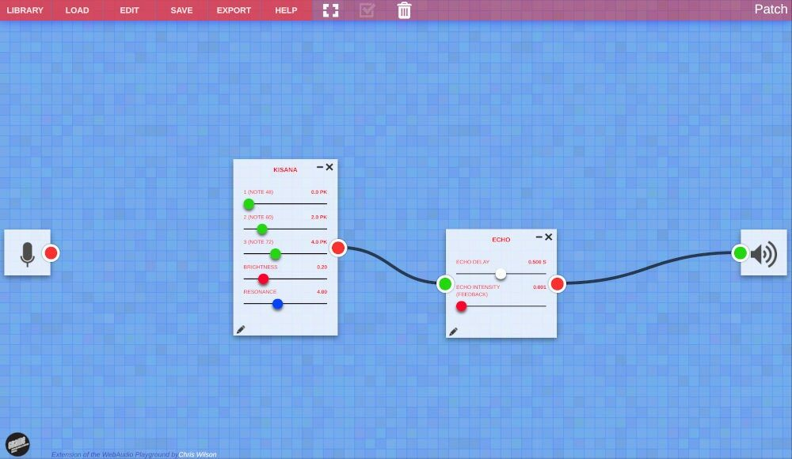
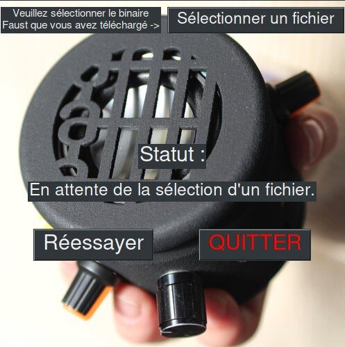
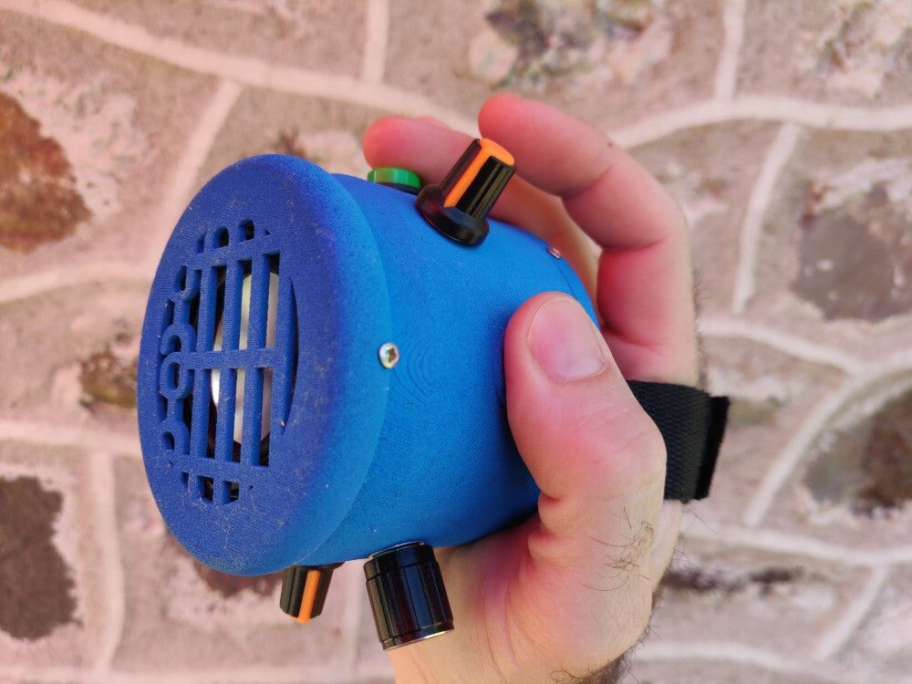

Amstramgrame: Making Scientific Concepts More Tangible Through Music Technology at School
Abstract
Amstramgrame is a music technology STEAM (Science Technology Engineering Arts and Mathematics) project aiming at making more tangible abstract scientific concepts through the programming of a Digital Musical Instrument (DMI): the Gramophone. Various custom tools ranging from online programming environments to the Gramophone itself have been developed as part of this project. An innovative method anchored in the reality of the field as well as a wide range of key-turn pedagogical scenarios are also part of the Amtramgrame toolkit. This article presents the tools and the method of Amstramgrame as well as the results of its pilot phase. Future directions along with some insights on the implementation of this kind of project are provided as well.
Author Keywords
STEAM, DMI, Faust, Pedagogy
CCS Concepts
•Applied computing → Education; Computer-assisted instruction;
•Applied computing → Arts and humanities; Sound and music computing;
Introduction
The field of music technology is at the intersection between a wide range of humanistic, artistic, scientific, and technical domains. Mechanical engineering is heavily used to design new musical interfaces or instruments, electrical engineering finds countless applications in sound synthesis and processing, the same is true for computer science, mathematics, physics, etc.
A fair amount of projects have emerged in recent years around the idea of using music, and more generally the arts, as a vector for teaching sciences and to foster critical thinking, a skill indispensable for any engineer. This eventually became an “area” in itself known as STEAM1 [1]. The field of music technology, by its nature, offers an obvious platform for the development of STEAM projects. We believe that such projects can be sorted in two categories: “field-driven,” “tool-oriented,” and in some rarer cases both.
Field-driven projects are often put together by instructors “on the field,” are not based on custom tools, and are just governed by the pragmatic idea of teaching students “cool things” in an innovative way. The vast majority of music technology STEAM projects fit in that category and only a few of them have been documented and/or studied in an academic setting. [2],[3], [4] and [5] are good examples of such projects and present interesting insights on their implementation. [5] for example highlights the fact that “time is the greatest obstacle to depth of technology integration,” a lesson that we tried to take into consideration as much as we could while putting together our own project.
Tool-oriented projects gravitate around a custom tool specifically developed for the project. iMuSciCA [6] is probably one the most ambitious project that was carried out in this context so far. Its goal was to facilitate the teaching of sciences through music technology via a Web platform [7] where students can design their own musical instruments using physics and mathematics principles, visualize the physical parameters of a sound in the prospect of making a composition, etc. As a project funded by the European Union, it involved multiple partners in different countries and was therefore implemented in various places all across Europe. The tool developed as part of iMuSciCA was strongly influenced by the various areas of expertise of the different academic and industrial partners of the project. EarSktech2 [8] is another tool-oriented music technology STEAM project focusing on coding where JavaScript and Python can be used to create songs.
Amstramgrame is a music technology STEAM project that was designed to be both field-driven and tool-based. Students learn maths and physics concepts through the programming of physical Digital Music Instruments (DMIs) called “Gramophones.” For example, the sin function studied in a maths class is used to implement a sine oscillator from scratch. That oscillator can then be used to implement an additive-synthesizer-based instrument controllable with the built-in sensors of the Gramophone making the parameters of the sin function “more tangible.” Students finally work with artists in a workshop setting towards the creation of musical pieces in the prospect of a performance.
In order to facilitate the implementation of Amstramgrame in any school independently from the hardware available onsite, the project heavily relies on Web technologies and the Gramophone, which is completely standalone.
In this paper, we present Amstramgrame, the various tools gravitating around it, and we give examples of pedagogical scenarios created as part of it. We then present the results of the pilot phase of the project before reflecting upon its results and discussing future directions.
Context of the Creation of Amstramgrame
Amstramgrame has been created in the quite specific and unique context of the French public educational system, which strongly influenced its format. It is the fruit of a collaboration between GRAME-CNCM3 and Réseau Canopé.4 GRAME-CNCM is a “National Center for Music Creation” funded by the French ministry of culture, the Auvergne-Rhône-Alpes region and the city of Lyon. It is organized in three departments: music production, mediation/transmission, and research. GRAME’s research department is known in particular for the development of the Faust programming language [9] which is one of the core technology used as part of Amstramgrame. GRAME promotes collaboration between its three departments and hence between artists, instructors, and researchers. Réseau Canopé is a public institution under the supervision of the French Ministry of Education. It is the publishing arm of the National Education service, and as such it performs editing, production, and dissemination of educational and administrative resources for professional education. Réseau Canopé’s strike force is relatively important since it collaborates with all public schools in France.
Despite its young age (it was founded in 2013), GRAME’s transmission department has been very active for the past seven years at promoting music technology and novel music creation in French schools, but also abroad. The SmartFaust project [10] which involved a series of workshops and performances around mobile music5 is a good example of that. GRAME and Réseau Canopé already collaborated in the context of SmartFaust and it is their common ambition of creating a STEAM project around coding, maths, physics, and music that gave birth to Amstramgrame. GRAME’s research department provided all the technological support for this project. GRAME’s transmission department lead the project and involved a wide range of artists working with GRAME on a regular basis to assist instructors in schools. Réseau Canopé involved multiple instructors on the field (in middle and high schools, mostly) to provide feedback and help design pedagogical content. It also gave access to a wide range of schools for the pilot phase of the project.
Tools
Amstramgrame relies on a series of tools that were either adapted for the project or created from scratch. They heavily rely on Web technologies to ensure their compatibility with the broad range of computers available in schools. In this section, we give an overview of the different tools that are used as part of Amstramgrame.
Overview of a “Typical” Amstramgrame Session
Amstramgrame sessions are lead by local teachers under the guidance of GRAME-CNCM instructors/artists (see Image 1). Teachers can put their course material (“scenarios”) on the Amstramgrame website. Two different tools are available to program the Gramophones: the Faust Web IDE, which targets middle and high school students and the Faust Playground, which doesn’t require to write a single line of code targeting younger students. Physics and Maths concepts are illustrated through the programming of the Gramophone. In a second phase, students work with an artist to create more coherent instruments in the perspective of a composition leading to a performance.


Amstramgrame Tools and Method Overview.
The Amstramgrame Website
The Amstramgrame website6 (see Image 2) centralizes all the technical information about the tools used as part of the project, tutorials on how to use them, and lessons (scenarios). Lessons were designed in tandem with GRAME’s research team and middle/high schools teachers. They all involve some programming in Faust targeting the Gramophone. Faust example programs can be opened, edited, and executed in the Faust Web IDE directly from the Amstramgrame website. As a collaborative platform for instructors, it is hosted on GitHub7 and it is based on mkdocs.8 Custom markdown tags can be used to embed Faust programs in a page and make it available in the Faust Web IDE. Our goal was to make it as easy to use as possible for teachers to upload their own scenarios. While it is available both in French and in English, most scenarios are in French only since they were written by instructors in the context of their class.


The Amstramgrame Website.
Faust
Faust is a functional Domain Specific programming Language (DSL) for real-time audio signal processing. The strengths of Faust lie in its efficiency, conciseness, and its ability to target a wide range of platforms and standards from a single standpoint. Hence, Faust can be used to make smartphone applications, web apps, audio plugins, etc.
Faust plays a central role in Amstramgrame by facilitating the implementation of very “tangible” audio synthesizers with just a few lines of code. Unlike many other computer music programming environments, Faust can carry out computation at the sample level, allowing for the implementation of any DSP algorithms from scratch without relying on third party tools (i.e., pre-compiled C++ objects). This property is extensively used as part of the pedagogical framework of Amstramgrame where students are required to establish direct connections between maths, physics, and their implementation through programming. For example,
import("stdfaust.lib"); f = hslider("freq",440,50,2000,0.01); phasor(freq) = (+(freq/ma.SR) ~ ma.frac); osc(freq) = sin(phasor(freq)*2*ma.PI); process = osc(f);
implements a sine wave oscillator using the mathematical sin function. Students first learn how to design a phasor (a sawtooth wave oscillating between 0 and 1 at a given frequency) by creating a loop and by using the Faust ma.frac function which returns the fractional part of a decimal number. Here, ma.SR corresponds to the sampling rate and ma.PI to .
The Amstramgrame Faust Web IDE
The Faust Web IDE [11] (see Image 3) is a standard Faust tool which has been adapted to work in the context of Amstramgrame. The Amstramgrame version of the Faust Web IDE can be accessed with a specific URL: https://faustide.grame.fr/?mode=amstram. It offers a simpler interface than the “standard” version to not intimidate students (and their instructors). Faust programs can be edited here. Their corresponding block diagram can be visualized and they can be executed directly in the browser. In practice this is not necessarily a useful feature since many schools are not equipped with computers with… speakers. A “Gramo” button can be pressed to launch the programming of the Gramophone through the GramoLoader. Pressing this button basically launches the remote compilation of a Gramophone firmware corresponding to the Faust program in the Web IDE.
The Faust Web IDE is used in scenarios targeting middle and high school students. On the other hand, the Faust Playground which is presented in the following section targets primary school students.


The Amstramgrame version of the Faust Web IDE.
The Faust Playground
The Faust Playground9 (see Image 4) is a tool allowing students to assemble pre-written Faust programs using a patching environment (in a similar way than in PureData, MaxMSP, etc.). It is extremely easy to use, making it accessible to primary school students. As for the Faust Web IDE, it has been adapted to program the Gramophone through the GramoLoader.


The Faust Playground.
The GramoLoader
The GramoLoader (see Image 5) is a tool that was specifically designed as part of Amstramgrame to easily program the Gramophone from the Faust Web IDE just by pressing the “Gramo” button (the Gramophone needs to be connected to the host computer via a USB cable). It retrieves the firmware compiled by the Faust Web IDE and installs it on the Gramophone. There exists versions of the GramoLoader for Windows, MacOS, and Linux and it can be downloaded for free from the Amstramgrame website.10 It is the only software requiring an installation as part of Amstramgrame. This can be potentially problematic as system administrators in public French schools tend to be extremely busy (and even non-existent, sometimes).


The GramoLoader.
The Gramophone


The Gramophone.
The Gramophone (see Image 6) is a musical instrument programmable in Faust based on an ESP32 LilyGO TTGO T-Audio board.11 It directly benefits from recent developments in Faust around microcontrollers for real-time audio signal processing [12]. Its built-in speaker and battery (which can last about fifteen hours) make it completely standalone. A strap is used to hold it in one hand. 9 DoF motion sensors as well as physical buttons, rotary potentiometers, and a photoresistor can be mapped to the different parameters of the sound synthesizer directly from the Faust code using metadatas. For example, an hypothetical “frequency” parameter of a Faust program can be mapped to the second knob of the Gramophone just by writing something like:
f = hslider(“freq[knob:2]“,200,50,1000,0.01);
Similarly, a specific axis of the accelerometer can be mapped to a parameter using standard Faust accelerometer metadata:12
g = hslider(“g[acc: 0 0 -10 0 10]“,0.5,0,1,0.01);
Hence, a full Faust Gramophone program can be as simple as:
f = hslider(“freq[acc: 0 0 -10 0 10]“,525,50,1000,0.01) : si.smoo;t = button(“gate[switch:1]“) : si.smoo;process = os.osc(f)*t;
which implements a sine wave controlled by the X axis of the accelerometer and triggerable by pressing the physical button of the Gramophone.
MIDI bluetooth support has been recently implemented enabling inter-Gramophone communication and MIDI control by external devices.
The Gramophone is a completely open-source project. Information on how to build a Gramophone from scratch can be found on the Amstramgrame website.13 Over 160 Gramophones were made as part of the project and are made available to schools through backpacks containing thirty Gramophones each. Making these Gramophones was a complex task to organize since the volume was not big enough to be fully outsourced. Only the cases were made by a 3D printing company and a person was hired for a period of five months to assemble them.
Because all Gramophones are currently “handmade” and are exclusively used as part of Amstramgrame, we do not sell them. Instead, we prefer to increase the size of the pool of Gramophones own by the project to lend them to the schools collaborating with us. This also frees us from any responsibility to fix faulty Gramophones sold to a third party. However, maintaining all these Gramophones requires some manpower and the person that we hired to assemble them is also responsible for fixing them.
Smartphones as An Alternative to Gramophones
Since we currently have a limited number of Gramophones and that Amstramgrame has the ambition to target as many schools as possible, we made the whole Amstramgrame toolchain compatible with smartphones to use them as an alternative to Gramophones. In that case, the Faust Web IDE and the Faust playground generate a ready-to-use Android app instead of a Gramophone firmware that students can install on their smartphone. This system relies on faust2android [13].
Evaluation of the Pilot Phase of the Project
As of January 2021, Amstramgrame is still in its pilot phase and sessions have been organized in two different schools: Cité Scolaire du Cheylard (Ardèche region) and the Collège Charles Peguy (Allier region).
The Cité Scolaire du Cheylard is both a middle and a high school (Collège and Lycée). A total of thirty hours of Amstramgrame sessions were organized in Fall 2020 over several weeks targeting three classes: two in middle school and one in high school. After students designed their own instruments using maths and physics concepts from their respective grades, a performance in which all the students of the school participated was organized. Music teachers got involved in the project and the instruments created as part of Amstramgrame were integrated to a larger ensemble made out of more “standard” instruments (e.g., drum kit, piano, woodwinds, etc.).
The Collège Charles Peguy is a middle school in which a total of forty hours of Amstramgrame sessions are currently being implemented over five different classes. We hope that the COVID-19 situation will allow us to complete all these sessions.
The observations we’re currently making during these pilot sessions are allowing us to prepare the official deployment of Amstramgrame which should take place in Spring 2021, if the situation allows it. From a technical standpoint, very few problems occurred during this pilot phase (surprisingly). No Gramophone broke, the online tools never went offline or stopped working, demonstrating the robustness of the Amstramgrame toolchain.
The use of Faust has been voted in by the teachers and the students so far. It was interesting to observe how kids with no prior background in programming engaged in using Faust with great ease compared to adults already mastering other programming languages (which in most cases were imperative and not functional like Faust).
Teachers in local schools really appreciated the help provided by GRAME’s instructors and artists. This confirmed our initial thought that this kind of project can only work if the appropriate support is provided to local teachers, especially at a technological level. All in all, teachers were very happy and highlighted the fact that this method significantly increased the engagement of students when learning maths and physics. Perhaps the only downside so far is the amount of noise generated during sessions which can be tough to handle by instructors over the course of a day.
Future Work
The preparation of Amstramgrame took about a year and half, and we had to make sure that every component of the project (e.g., pedagogical, technical, etc.) reached a stable state before the pilot phase was launched. Hence, even though some adjustments are currently being made based on the observations made during the first Amstramgrame sessions, we plan to freeze the evolution of the project for some time in order to focus on its deployment at a larger scale.
That being said, our ambition is to add a hardware dimension to Amstramgrame by allowing students to design their own instrument with code — as it is already the case — but also with custom hardware, learning fundamentals of electronics, product design, etc. For that, we’d like to replace the Gramophone with a kit based on a cardboard box that could be used as the case of the instrument (e.g., in a similar way than Nitendo Labo14) containing sensors, a microcontroller programmable with Faust for real-time audio DSP (i.e., an ESP32 as for the Gramophone), etc.
On the technical side, we’d like to come up with a solution to get rid of the GramoLoader to program the Gramophone directly from the Faust Web IDE without using a third-party software. There already exists examples of such tools like the Arduino Create Platform.15 This would make Amstramgrame more portable and implementable in almost any context.
Finally, after the success of the pilot phase of the project, we are receiving an increasing number of requests from people and institutions willing to buy Gramophones. While we currently rely on a “borrow or make your own” model, we are investigating several options to potentially sell them.
Conclusion
Amstramgrame is a music technology STEAM project rooted in the practical context of the French public educational system and based on tools developed at GRAME-CNCM around the Faust programming language. We believe that the combination of cutting-edge technologies with the pragmatic reality of the field will ensure the success of the project. The results of the pilot phase allow us to be very optimistic and we look forward to deploy Amstramgrame at a larger scale now.
It is our conviction that approaching the teaching of maths and physics in a more practical setting increases the engagement and the motivation of students. Sounds and music are a very tangible way to approach abstract concepts which is something that we try to leverage as much as possible in Amstramgrame.
While the method and the tools presented here can probably be adapted to any settings, a large portion of the project has been designed within the context of the public French educational system. The context of the field can significantly change from one country to another so we believe that this is an extremely important factor to take into account when putting this kind of project together.
Footnotes
Science Technology Engineering Arts and Mathematics
↩- ↩
- ↩
- ↩
By mobile music we mean music made with mobile devices such as smartphones, tablets, etc.
↩- ↩
- ↩
- ↩
- ↩
- ↩
- ↩
https://faustdoc.grame.fr/manual/syntax/#sensors-control-metadatas
↩- ↩
- ↩
- ↩
Citations
- ↩Land, M. H. (2013). Full STEAM Ahead: The Benefits of Integrating the Arts Into STEM. Procedia Computer Science, 20, 547–552.
- ↩Shafer, J., & Skripchuk, J. (2020). Computational Thinking in Music: A Data-Driven General Education STEAM Course. In Proceedings of the 51st ACM Technical Symposium on Computer Science Education (SIGCSE ’20). Portland (USA).
- ↩Yoon, J., & Kim, K. J. (2017). Science Song Project: Integration of Science, Technology and Music to Learn Science and Process Skills. K-12 STEM Education, 3, 235–250.
- ↩Gregorio, J., Rosen, D. S., & Morton, B. G. (2015). Introduction to STEAM through Music Technology (Evaluation). In Proceedings of the 122nd ASEE Annual Conference and Exposition. Seattle (USA).
- ↩Dorfman, J. (2016). Exploring Models of Technology Integration into Music Teacher Preparation Programs. Visions of Research in Music Education, 28.
- ↩Katsouros, V., Fotinea, E., Frans, R., Andreotti, E., Stergiopoulos, P., Chaniotakis, M., … Liwicki, M. (2018). iMuSciCA: Interactive Music Science Collaborative Activities for STEAM Learning. In E. Kapros & M. Koutsombogera (Eds.) (pp. 123–154). Cham: Springer International Publishing. https://doi.org/10.1007/978-3-319-94794-5_7
- ↩Kritsis, K., Bouillon, M., Martín-Albo, D., Acosta, C., Piéchaud, R., & Katsouros, V. (2019). iMuSciCA: A Web Platform for Science Education Through Music Activities. In Proceedings of the Web Audio Conference WAC-2019. Trondheim (Norway).
- ↩J. Freeman, B. Magerko, D. Edwards, R. Moore, T. McKlin, & A. Xambó. (2015). EarSketch: A STEAM approach to broadening participation in computer science principles. In 2015 Research in Equity and Sustained Participation in Engineering, Computing, and Technology (RESPECT). https://doi.org/10.1109/RESPECT.2015.7296511
- ↩Orlarey, Y., Fober, D., & Letz, S. (2009). FAUST : an Efficient Functional Approach to DSP Programming. New Computational Paradigms for Computer Music. Delatour.
- ↩Michon, R., Orlarey, Y., Letz, S., Fober, D., & Dumitrascu, C. (2019). Mobile Music With the Faust Programming. In 14th International Symposium on Computer Music Multidisciplinary Research (p. 371).
- ↩Ren, S., Letz, S., Orlarey, Y., Michon, R., Fober, D., Buffa, M., … Lebrun, J. (2019). FAUST online IDE: dynamically compile and publish FAUST code as WebAudio Plugins. In WAC 2019-5th Web Audio Conference.
- ↩Michon, R., Overholt, D., Letz, S., Orlarey, Y., Fober, D., & Dumitrascu, C. (2020). A Faust Architecture for the ESP32 Microcontroller. In Sound and Music Computing Conference (SMC-20).
- ↩Michon, R. (2013). faust2android: a Faust architecture for Android. In Proceedings of the 16th International Conference on Digital Audio Effects (DAFx-13), Maynooth, Ireland (pp. 2–6).